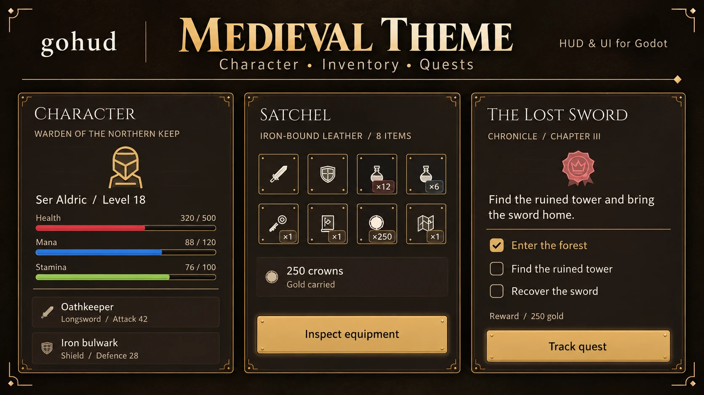
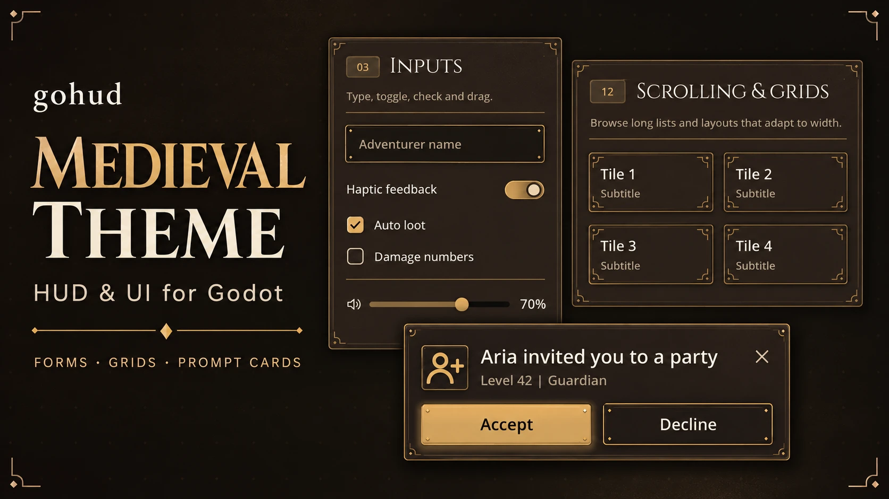
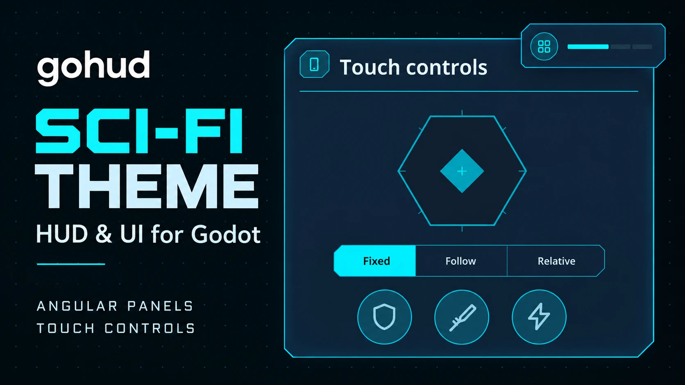
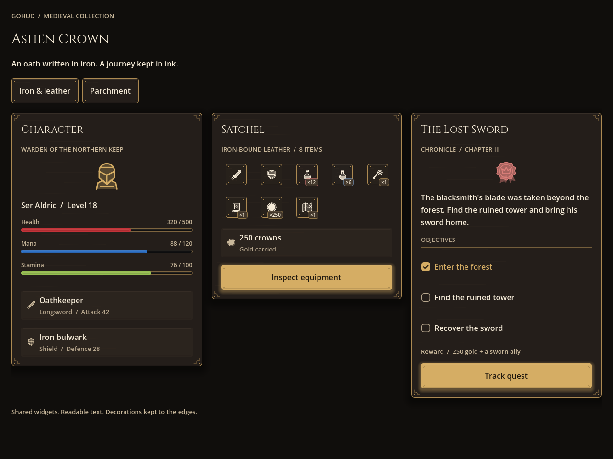
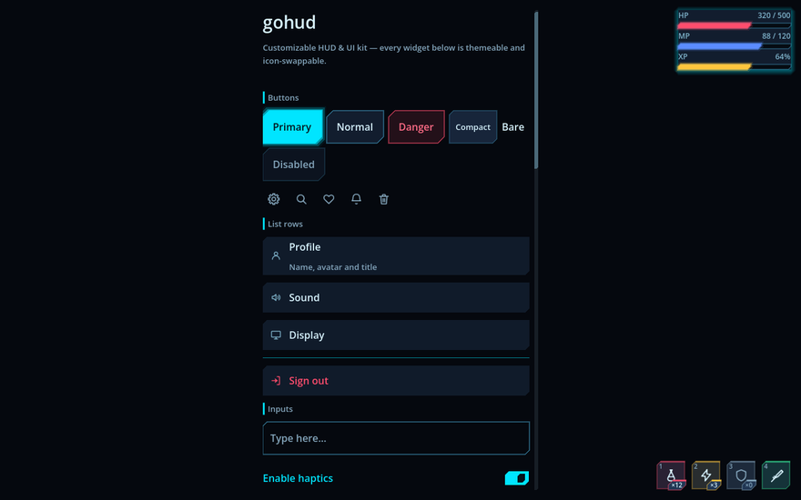

게임 화면에서는 이렇게 보인다
중세·sci-fi 프리셋 — 캐릭터 정보·가방·퀘스트, 폼·격자·안내 카드, 각진 판과 터치 조작. 프리셋을 바꾸는 것은 코드 한 줄이다.



무엇을 대신해 주는가
게임 UI 에서 시간을 가장 많이 잡아먹는 것은 버튼 모양이 아니라, 기기마다 다르게 어긋나는 것들이다. gohud 는 그 어긋남을 한곳에서 처리한다.
모든 치수가 토큰이다
여백·모서리·글자 크기를 숫자로 쓰지 않고 이름으로 부른다. 테마를 갈아 끼우면 화면 전체가 함께 움직인다.
보이는 크기와 누르는 크기가 다르다
닫기 버튼은 36dp 로 보이지만 터치 타깃은 48dp 다. 슬롯이 촘촘히 깔려도 겹친 자리는 중심이 가까운 쪽이 가져간다.
노치와 키보드를 피한다
안전영역 안에 HUD 를 붙이고, 가상 키보드가 올라오면 입력 칸이 그 위로 올라온다.
뒤로 가기가 하나씩 닫힌다
Escape 와 Android 뒤로 가기가 가장 위 창 하나만 닫는다. 겹쳐 띄운 창이 한꺼번에 사라지지 않는다.
알림은 입력을 훔치지 않는다
스낵바 위를 눌러도 그 아래 버튼이 눌린다. 포커스도 가져가지 않는다.
아이콘은 이름으로 부른다
위젯은 GoIconSet.CLOSE 처럼 이름만 안다. 세트를 갈아 끼우면 코드를 한 줄도 안 고치고 그림이 바뀐다.
생김새 여섯, 코드 한 줄
GoUi.use_preset() 이 테마·스킨·아이콘을 함께 바꾼다 — 둥근 판, 모서리를 자른 sci-fi, 단조 프레임의 중세.
읽히는지는 잰다
모든 테마를 WCAG 로 잰다. 버튼 상태별 판, 순백·순흑 위에 얹힌 반투명 HUD 판까지.
gohud 설치
길은 둘이다. AI 에게 시키거나, 폴더를 프로젝트에 넣거나 — 그 밖에 설정할 것은 없다.
빠른 시작
다섯 줄이면 테마가 입혀진 화면이 뜬다. 처음부터 끝까지는 설치 쪽에 있다.
생김새 바꾸기 — 색뿐 아니라 모양까지
Theme 는 엔진이 그려 주는 것의 모양만 바꾼다. StyleBoxFlat 의 모서리는 둥근 것뿐이고, 조이스틱·퀵슬롯·코치마크는 코드가 직접 그리므로 테마를 아무리 갈아 끼워도 모양이 안 바뀐다. 그래서 gohud 는 테마·스킨·아이콘을 한 단위로 고르는 프리셋을 쓴다.
GoUi.use_preset(GoThemePresets.MEDIEVAL_DARK) # 테마·스킨·아이콘이 한꺼번에| 프리셋 | 생김새 |
|---|---|
default_dark | gohud 원래 모습 — 둥근 모서리, 부드러운 파란 강조 |
default_light | 같은 모양에 밝은 팔레트 |
scifi_dark | 챔퍼 모서리, 시안 네온 테두리와 발광, 육각 조이스틱, 조준 표식 |
scifi_light | 같은 각진 모양에 밝은 설계도 팔레트 |
medieval_dark | 어두운 철·가죽, 고금색 프레임, 리벳, 각인풍 아이콘, Cinzel 제목 |
medieval_light | 양피지·잉크·청동 색상의 같은 단조 프레임 |

default_dark — 둥근 모서리, 부드러운 파란 강조
default_light — 같은 모양, 밝은 팔레트
scifi_dark — 챔퍼 모서리, 시안 네온
scifi_light — 같은 각진 모양, 설계도 팔레트네 장 모두 같은 갤러리 화면이다. 코드는 한 줄도 다르지 않고 프리셋 이름만 바뀌었다. 버튼 모서리, 토글 모양, 목록 줄, 입력 칸 테두리가 함께 움직이는 것이 보인다.
중세 테마
medieval_dark 는 철·가죽에 고금색, medieval_light 는 양피지와 잉크 색상이다.
메뉴 프레임에는 리벳과 작은 모서리 장식을 두고 상시 HUD 는 절제했다. 각인풍 아이콘 16종이 아이템 이름을
다시 그리고, 포함된 Cinzel 글꼴은 제목·부제에만 쓴다.

medieval_dark — 철과 가죽
medieval_light — 양피지와 잉크두 장 모두 기본 위젯으로 만든 examples/medieval/medieval.tscn 이다.
중세 안내와 나만의 왕국 만들기 →
같은 화면, 폰에서도 데스크톱에서도
갤러리 네 장은 폰 세로다. 아래는 같은 코드를 1280×800 으로 띄운 것이다 — 본문은 읽기 좋은 폭(480dp)에서 멈춰 가운데에 서고, HUD 는 화면 구석에 남는다. 폼은 떠 있는 HUD 와 겹치지 않게 비키되, 닿지 않으면 밀지 않는다 — 넓은 화면에서 괜히 밀면 본문이 한쪽으로 치우친다.

default_dark · 1280×800
scifi_dark · 1280×800같은 시트, 다른 생김새


에디터에서 고르려면 프로젝트 설정 → gohud → Theme → Preset, 설정 리소스에서는
GoConfig.preset 칸이다. theme·skin·icons 를 직접
채우면 그쪽이 프리셋보다 우선한다 — 프리셋을 고른 뒤 한 칸만 자기 것으로 바꿔 끼울 수 있다.
new_theme.py kingdom --from medieval_dark 가 물려받은 값을 전부
풀어 적은 팔레트를 만들고, make_theme.py kingdom 이 테마·컨트롤 그림·스킨 다이얼까지 생성한다.
프리셋은 고르개에 저절로 뜬다. → 설정과 다이얼 전부
스킨 — 테마가 닿지 못하는 자리
GoSkin 은 조이스틱, 퀵슬롯 판, 코치마크 링, 칩, 스켈레톤, 알림 상자, 분절 선택, 구분선의 모양을 맡는다. 상속해서 바꾸고 싶은 것만 덮어쓰면 나머지는 기본 모양 그대로다.
class_name MySkin extends GoSkin
func slot_box(accent: Color, lit: bool) -> StyleBox:
var box := GoStyleBoxCut.new()
box.bg_color = accent
box.cut = 6.0
box.edge_color = accent # 위쪽 강조 변
return box
func draw_joystick(canvas: CanvasItem, center: Vector2, knob: Vector2,
radius: float, knob_radius: float, ink: Color, base: Color, active: bool) -> void:
canvas.draw_circle(center, radius, Color(base, 0.4))
canvas.draw_circle(knob, knob_radius, ink)| 클래스 | 낼 수 있는 모양 |
|---|---|
GoStyleBoxCut | 모서리를 사선으로 자른 판(챔퍼), 한 변만 굵은 강조 변, 바깥으로 번지는 발광 |
GoStyleBoxBracket | 변을 두르지 않고 네 모서리만 짧게 긋는 조준 표식 |
GoStyleBoxMedieval | 리벳·모서리 각인·베벨 반사·재질 질감이 있는 단조 프레임 |
셋 모두 여느 StyleBox 처럼 Theme 리소스 안에 그대로 저장된다 — 즉 테마가 모양을 바꿀 수 있다.
GoSkinSciFi·GoSkinMedieval 이 함께 들어 있는 상속 예다.
bg_color 나
corner_radius 를 고치는 옛 호출부와의 약속이기 때문이다. 커스텀 모양을 지켜야 하면
GoStyle.surface() 를 쓴다.
위젯
부품을 표 하나로. → 위젯 하나하나 자세히 보기
| 클래스 | 바탕 | 하는 일 |
|---|---|---|
GoSurface | Control | 떠 있는 창의 껍데기 — 가운데·아래·붙임 배치, 고정 머리말·바닥, 스크롤 본문, 끌어서 높이 조절 |
GoSheet | CanvasLayer | 아래에서 올라오는 페이지. 자체 층을 가져 HUD 위에 확실히 뜬다 |
GoDialogs | Node | await 로 받는 확인·알림. 되돌릴 수 없는 일에는 destructive |
GoForm | MarginContainer | 브레이크포인트마다 폭을 제한하고 가상 키보드를, avoid_hud 면 HUD 까지 피하는 폼 |
GoScroll | ScrollContainer | 손가락 스크롤. 스크롤바가 카드 여백 자리로 들어간다 |
GoNotice | PanelContainer | 입력도 포커스도 훔치지 않는 스낵바 |
GoPromptCard | PanelContainer | 화면을 막지 않는 질문 카드 |
GoCoachMark | Control | 실제 컨트롤을 가리키는 안내 투어. 가리킨 것을 누르면 다음으로 넘어간다 |
GoHudAnchor | Control | HUD 를 화면 아홉 자리 중 하나에 안전영역을 지켜 붙인다 |
GoBar | Control | 체력·마나·경험치 막대. 값·분수·퍼센트 표시와 부드러운 보간 |
GoSlot | Button | 퀵슬롯 한 칸 — 아이콘·수량·쿨다운·단축키를 판 한 장에 |
GoJoystick | Control | 고정·따라오기·상대 모드의 가상 조이스틱 |
GoIconButton | Button | 작게 보이고 크게 눌리는 아이콘 버튼 |
GoStyle | 정적 | 버튼·칩·목록 줄·표·아바타·탭을 한 줄로 만드는 공장 |
AI SKILL
gohud 에는 AI 스킬이 들어 있다 — API 전부와 바로 돌아가는 템플릿, 미리보기 실행기. 아래 한 덩이를 코딩 에이전트에 붙여 넣으면 gohud 를 설치하고 쓰는 법까지 익힌다.
읽히는지는 눈대중이 아니라 잰다
"예쁘다" 는 취향이지만 "읽힌다" 는 잴 수 있다. 흐린 회색 글씨는 좋은 모니터에서 멀쩡해 보이고 한낮의 폰에서는 사라진다 — 눈으로 고르면 언젠가 반드시 그렇게 된다.
python3 addons/gohud/tools/check_contrast.py색 짝 전부와 버튼 상태마다의 글자와 그 글자가 얹힌 판을 여섯 테마 모두에서 WCAG 로 잰다. 반투명 색은 실제 배경에 합성한 뒤에 잰다 — 그대로 재면 화면에 보이는 것보다 좋은 비율이 나온다.
그래서 글자 색은 고르는 것이 아니라 끌어낸다 — 빌더가 팔레트 값을 출발점으로 삼아, 그 글자가 놓일 수 있는 모든 표면에서 기준을 넘길 때까지 밝기를 민다. 팔레트를 바꾸면 대비가 따라온다. 규칙과 그 뒤의 함정 →
검사·배포·이 사이트
진입점 하나가 검사 전부를 돌린다. 검사마다 볼 수 있는 범위가 다르다.
bash addons/gohud/tools/check_all.sh| 검사 | 잡는 것 |
|---|---|
run_tests.sh 네 화면 크기 | 위젯 동작·배치, RTL 위치, 키보드 포커스, 스킨이 실행 중에 만드는 색의 대비, 프리셋 전부 |
new_project_check.sh | 호스트 프로젝트에 몰래 기대는 것. --zip 이면 배포본 그대로, --export 면 Web 빌드까지 |
check_contrast.py | 테마 파일 전부의 WCAG 대비 — 버튼 상태와 반투명 판 포함 |
check_generated.py · check_scaffold.sh | 생성된 테마가 팔레트와 맞는가, 임시 테마가 만들어지고 대비를 통과하는가 |
check_package.py | 버전 올림·CHANGELOG 이동·ZIP 내용을 임시 사본에서 |
check_site.py | 이 사이트의 링크·절 앵커·문서 언어·용어 사전·다이얼 표 |
배포 버전
bash addons/gohud/tools/package.sh # 1.0.1 → 1.0.2 · builds/1.0.2/gohud-1.0.2.zip
bash addons/gohud/tools/package.sh --increase-minor-version # 1.0.1 → 1.1.0성공하면 plugin.cfg·GoUi.VERSION·CHANGELOG.md 가 함께 바뀌고 Unreleased
항목이 날짜 붙은 버전으로 옮겨진다. 실패하면 아무것도 바뀌지 않고, 이미 있는 ZIP 은 덮어쓰지 않는다.
ZIP 에는 이 사이트·검사·도구가 들어가지 않는다.
이 사이트
python3 addons/gohud/tools/make_site.py # 용어 사전과 다이얼 표를 소스에서 생성
python3 addons/gohud/tools/check_site.py # 링크·앵커·언어·용어 사전·생성 표 검사
bash addons/gohud/tools/site_shots.sh /tmp/shots # 페이지마다 데스크톱·폰 폭 촬영페이지는 www/ 의 평범한 HTML 이다 — 루트가 영문, ko/ 가 한국어.
GitHub Actions 워크플로가 이 폴더를 사이트 최상위로 배포한다.